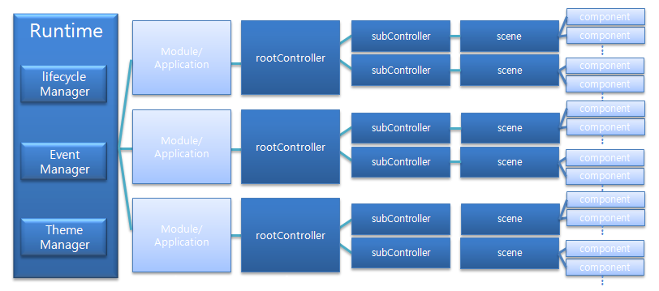
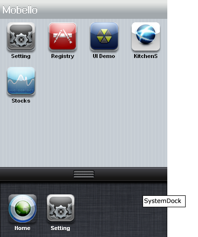
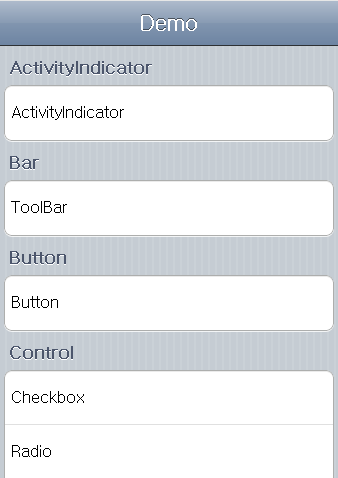

Runtime은 mobello의 핵심모듈이다. 간단하게 살펴보도록 하겠습니다.
목차:
Runtime 이란것은 Mobello의 제일 코어단에 있는 핵심모듈입니다. 아래의 그림은 추상화된 Runtime과 상위 모듈간의 구성도입니다.

Runtime은 lifecycle Manager, Event Manager, Theme Manager로 구성되어있습니다.
Runtime은 single app 과 multi app 환경을 모두 지원합니다. single app은 뒤에 launcher.html?app=demo 이렇게 app의 이름으로 된 url형태가 되면 single app 환경으로 동작됩니다 , multi app은 뒤에 launcher.html 이렇게 url형태가 되면 multi app으로 동작합니다.
| Multi App | Single App |
|---|---|
|  |  |
위의 오른쪽 그림처럼 single app에서는 하나의 앱이 바로 화면에 나오지만 위의 왼쪽 그림처럼 multi app에서는 dashboard가 처음 화면에 나타납니다. dashboard에서는 각각 shortcut들이 격자 모양으로 배치되어 있습니다. shortcut를 tap(터치)하면 해당하는 app이 실행됩니다. 다시 dashboard로 돌아오려면 위의 왼쪽그림에서 아래에 SystemDock에 있는 home 버튼을 tap하면 다시 dashboard로 돌아옵니다. SystemDock은 단지 dashboard가 사용되는 multiapp에서만 사용됩니다. 더 자세한 것은 Single and Multi App 문서를 참고 하면 더 많은 정보를 얻을 수 있습니다.
Runtime 은 Module(Application)을 스택으로 관리하고 있습니다. 현재 최상위에 있는 인스턴스가 active한 Module(Application)입니다. 모든 이벤트는 이 모듈로 전달 되게 됩니다.
위와 같은 상황에서 DashBoard에서 Stocks App을 선택하게 되면 스택에서 위치가 Stocks App이 push되어 최상위가 됩니다. 만약 Stocks App가 이미 스택에 존재 했었다면 , Stocks App를 스택에서 빼서 최상위로 push하게 됩니다. 그럼 이제 Stocks App이 모든 이벤트를 전달받게 됩니다.
App Lifecycle은 크게 다음과 같은 단계로 진행됩니다.